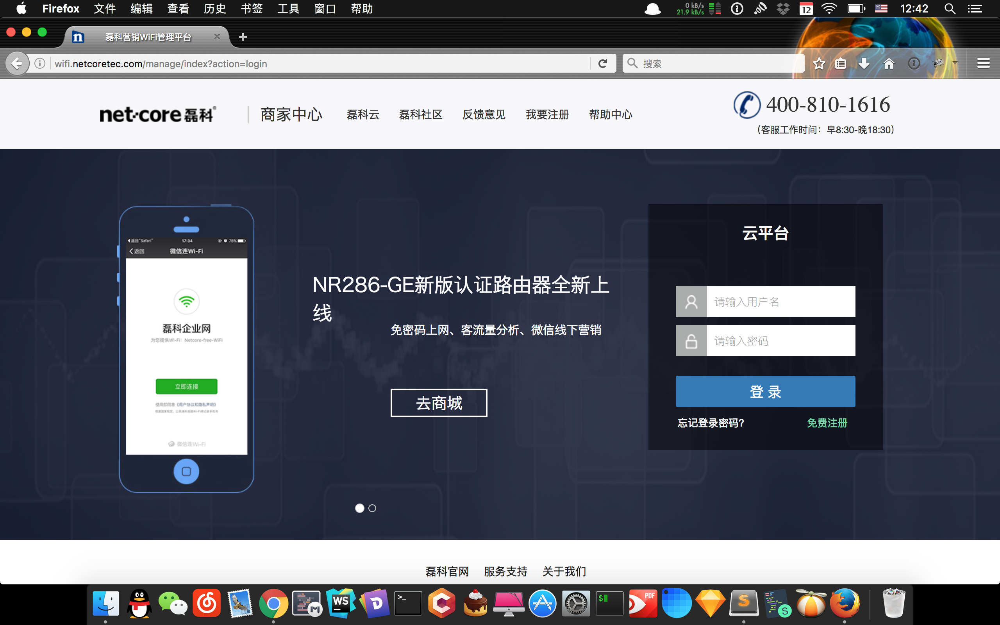

-
- Basic info. 基本信息
- 个人信息: 陈欣 / 男 / 27岁
- 学历: 本科
- 工作经验: 四年年工作经验、7年项目经验
- GitHub: www.github.com/CoderBOBO
-
- Experience. 项目与工作经验
Bootstrap中文网（2015.3 - 2015.6）
-
Bootstrap中文网项目
参与 Bootstrap 中文网的前端开发工作，根据设计图完成项目的大部分样式修改，完成了首页、nootstrap3、专题、关于等页面.翻译了英文文档来给国内开发者阅读
使用 bootstrap 框架 和 less 预处理器 来实现前端组件及数据交互，使用 Gulp Bower 改进工作流
-
天天陪护项目（2015.6 - 2015.8）
参与 天天陪护 护工平台的前端开发工作，自主设计、实现护工平台，完成了首页，护工平台的预订、管理、评论 、护工注册等页面的开发
使用 妹子UI 框架 和 less 预处理器 来实现前端组件及数据交互，使用 Grunt Bower 改进工作流 后端采用php 数据库为mysql。注：由于创业公司创业失败，项目下线，无法展示。
-
磊科云平台项目（2015.8 - 2016.8）
参与 磊科云平台的前端开发工作，根据设计师的设计完成了AC AP页面的线上管理模块的前端实现以及客户数据可视化的统计
使用 bootstrap 框架、数据可视化框架 highchart 框架 来实现前端组件及数据交互，使用 Gulp Bower Npm改进工作流 后端采用PHP使用composer来管理PHP依赖采用在linux上的nginx部署
 -
磊科员工管理系统（2016.10 - 2017.2）
参与 磊科员工管理系统的前端开发工作，自主设计,实现员工管理，部门管理，库存管理，员工考勤模块
项目采用Laravel + Angularjs + Bootstrap + AdminLTE实现的后台模板.使用了Gulp工作流，并且支持 OAuth 和 JWT 认证，此外使用 Dingo API 实现了RESTful API，还用到了 Restangular 和 UI-Router，在权限控制方面，使用了 Romanbican/Roles 和 Angular ACL.
-
酒商圈（2017.2 - 2018.11）
项目负责人，负责平台的前后端框架选型，前期的需求功能的采集，可行性分析，以及部分的前端开发工作
PHP + CSS3 + HTML5 + MYSQL + JAVASCRIPT + PYTHON爬虫 + Echart数据可视化图表，微信公众号开发
-
酒商圈后台数据管理平台（2018.3 - 2018.12）
项目负责人，酒商圈数据后台的整体开发，包括部分功能的设计，和需求的整理，自己写完60%页面，可以让用户通过数据后台清楚直观的了解线下商户的酒商圈各个功能的使用情况
PHP + CSS3 + HTML5 + MYSQL + JAVASCRIPT + PYTHON爬虫 + Echart数据可视化图表 + Vue
-
in 酒五粮醇抽奖砍价平台（2019.3 - 至今）
项目负责人，in 酒平台采用微信小程序的开发方式，方便品牌商在平台中促销，推广产品
PHP + CSS3 + HTML5 + MYSQL + JAVASCRIPT + Echart数据可视化图表 + Canvas
个人项目
-
Code-BOBO个人博客（2015.10 - 2017.2）
Jkelly主题修改，内容维护
-
- Skill. 技能清单
Web前端
-
HTML / CSS
能够编写语义化的 HTML，模块化的 CSS，完成较复杂的布局
熟悉 Less / Sass 等CSS预处理和后处理方法、工具
-
JavaScript
能运用模块化、面向对象的方式编程
了解 jQuery AngularJS VueJS 微信小程序的使用
-
其他
熟悉 Yeoman Bower Grunt Gulp 前端自动化工具
了解前端安全、性能优化方面的一些知识
后端
-
环境
熟悉 Linux 开发环境、 Linux 服务器环境搭建部署，两年 Linux 日常使用经验
了解 Apache Nginx web服务器，一年多建站经验
产品端
-
技能
办公软件
熟练使用 Xmind Visio
熟练使用 Ps，Sketch 切图，和一些简单的设计
熟练使用 Axure
其他
-
严重强迫症，不能忍受界面一个像素的偏差
学习能力强，喜欢钻研新技术，新工具
能够熟练使用 Markdown 进行写作
由于个人原因从前端开发转到产品，四年开发经验对产品流程，包括项目周期有比较好的理解，希望寻求一分产品经理的职位

陈欣的简历
"Write the Code. Change the World."
-
- Contact. 联系方式
- 电话: 18200292302
- 邮箱: code_chen@126.com
- 微信: code-chen
-
- Application. 应聘岗位
- 产品经理
-
- Tech. 技能点
XmindAxureSketchPPT
我目前正在寻找产品经理岗位，希望借此机会为贵司献上我的一点绵薄之力，快招我到碗里来吧！
平时自己也会研究一下关于产品、以及动效设计方面的问题，对于产品方面也有一点自己的见解